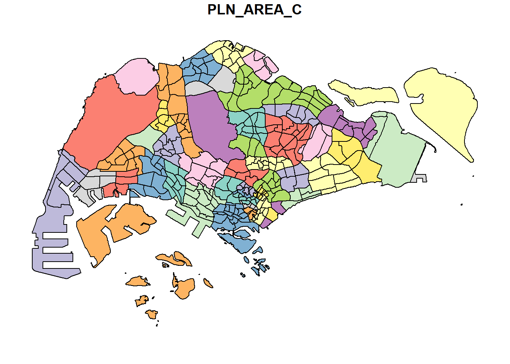
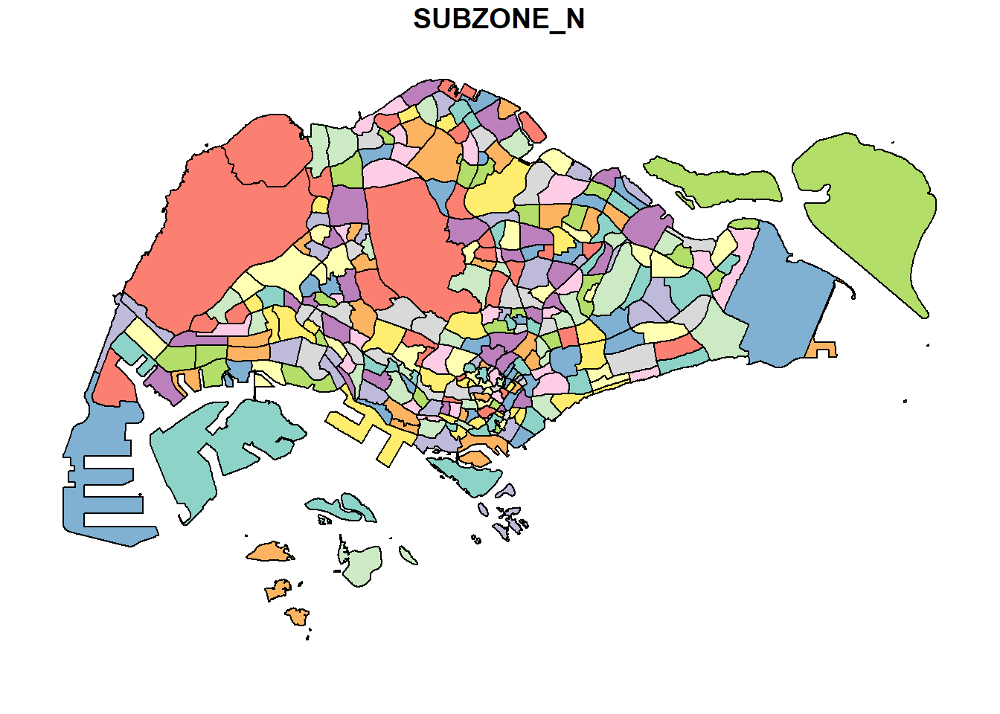
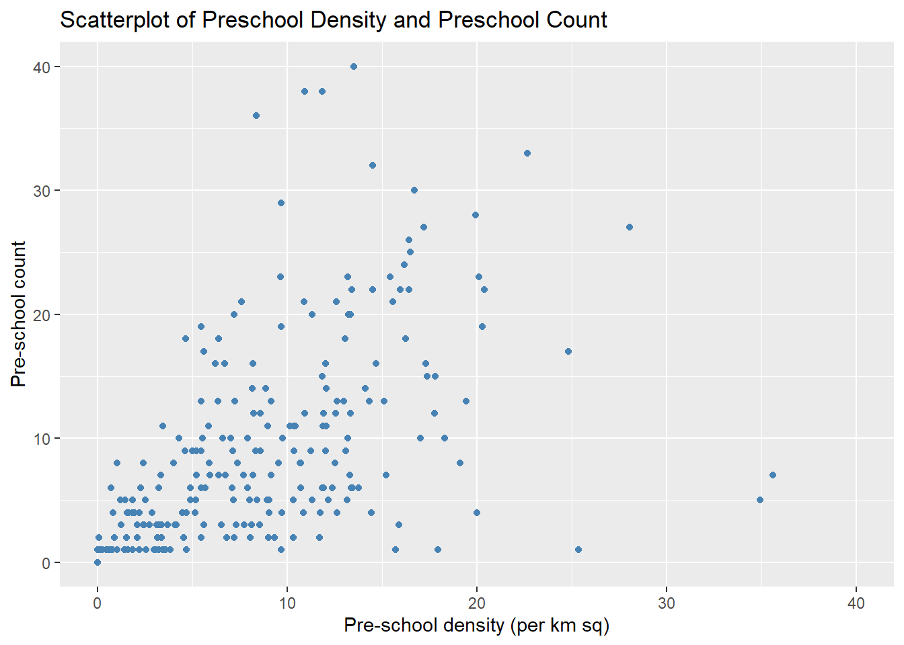

pacman::p_load(sf, tidyverse)1a: Geospatial Data Wrangling with R
Getting started
The code chunk below uses p_load() of pacman package to check if the required packages have been installed on the computer. If they are, the packages will be launched.
sf package is used for importing, managing, and processing geospatial data.
The data sets used are:
- Master Plan 2014 Subzone Boundary (Web) (last updated Dec 2014) from data.gov.sg retrieved on 17 Nov 2023
- Pre-Schools Location (last updated Jul 2023) from data.gov.sg retrieved on 17 Nov 2023
- Cycling Path (last updated Jul 2023) from LTADataMall retrieved on 17 Nov 2023
- Singapore listing data (last updated Sep 2023) from Inside Airbnb retrieved on 17 Nov 2023
Importing Data
Import Polygon Feature Data in shapefile format
The code chunk below uses st_read() function of sf package to import MP14_SUBZONE_WEB_PL shapefile into R as a polygon feature data frame.
When the input geospatial data is in shapefile format, two arguments are used: (1)
dsnto define the data path and (2)layerto provide the shapefile name. File extensions (.shp, .dbf, .prj, .shx) need not be specified.
mpsz = st_read(dsn = "data/geospatial",
layer = "MP14_SUBZONE_WEB_PL")Reading layer `MP14_SUBZONE_WEB_PL' from data source
`C:\magdalenecjw\ISSS624 Geospatial\Hands_on_Exercise\Ex1\data\geospatial'
using driver `ESRI Shapefile'
Simple feature collection with 323 features and 15 fields
Geometry type: MULTIPOLYGON
Dimension: XY
Bounding box: xmin: 2667.538 ymin: 15748.72 xmax: 56396.44 ymax: 50256.33
Projected CRS: SVY21There are a total of 323 multipolygon features and 15 fields in mpsz simple feature data frame. mpsz is in svy21 projected coordinate system.
svy21 (or Singapore SVY21 Projected Coordinate System) is a projected coordinate system used by Singapore that is based on the Transverse Mercator projection from geographical coordinates referenced to the WGS 84 ellipsoid.
The bounding box provides the x extend and y extend of the data.
Import Polyline feature data in shapefile format
The code chunk below uses st_read() function of sf package to import CyclingPath shapefile into R as line feature data frame.
cyclingpath = st_read(dsn = "data/geospatial",
layer = "CyclingPathGazette")Reading layer `CyclingPathGazette' from data source
`C:\magdalenecjw\ISSS624 Geospatial\Hands_on_Exercise\Ex1\data\geospatial'
using driver `ESRI Shapefile'
Simple feature collection with 2558 features and 2 fields
Geometry type: MULTILINESTRING
Dimension: XY
Bounding box: xmin: 11854.32 ymin: 28347.98 xmax: 42626.09 ymax: 48948.15
Projected CRS: SVY21There are a total of 2558 features and 2 fields in cyclingpath linestring feature data frame. cyclingpath is also in svy21 projected coordinate system.
Import GIS data in kml format
The code chunk below uses st_read() function of sf package to import PreSchoolsLocation into R.
In kml format, the complete path and the kml file extension must be provided.
preschool = st_read("data/geospatial/PreSchoolsLocation.kml")Reading layer `PRESCHOOLS_LOCATION' from data source
`C:\magdalenecjw\ISSS624 Geospatial\Hands_on_Exercise\Ex1\data\geospatial\PreSchoolsLocation.kml'
using driver `KML'
Simple feature collection with 2290 features and 2 fields
Geometry type: POINT
Dimension: XYZ
Bounding box: xmin: 103.6878 ymin: 1.247759 xmax: 103.9897 ymax: 1.462134
z_range: zmin: 0 zmax: 0
Geodetic CRS: WGS 84There are a total of 2290 features and 2 fields in preschool point feature data frame. Unlike the above two simple feature data frames, preschool is in wgs84 geographic coordinate system.
wgs84 is the current version of the World Geodetic System (WGS), which is a standard used in cartography, geodesy, and satellite navigation including GPS. It is a geographic coordinate system, which defines locations on the earth using a three-dimensional spherical surface.
Checking data content of Simple Feature Data Frame
The column in the sf data frame that contains the geometries is a list, of class sfc. There are two ways to check the data contents:
- Retrieve the geometry list-column in this case by
mpsz$geomormpsz[[1]]. - Use
st_geometry()to display basic information of the feature class such as geometry type, geographic extent of the features and the coordinate system of the data.
st_geometry(mpsz)Geometry set for 323 features
Geometry type: MULTIPOLYGON
Dimension: XY
Bounding box: xmin: 2667.538 ymin: 15748.72 xmax: 56396.44 ymax: 50256.33
Projected CRS: SVY21
First 5 geometries:glimpse() of the dplyr package reveals associated attribute information such as data type of each fields.
glimpse(mpsz)Rows: 323
Columns: 16
$ OBJECTID <int> 1, 2, 3, 4, 5, 6, 7, 8, 9, 10, 11, 12, 13, 14, 15, 16, 17, …
$ SUBZONE_NO <int> 1, 1, 3, 8, 3, 7, 9, 2, 13, 7, 12, 6, 1, 5, 1, 1, 3, 2, 2, …
$ SUBZONE_N <chr> "MARINA SOUTH", "PEARL'S HILL", "BOAT QUAY", "HENDERSON HIL…
$ SUBZONE_C <chr> "MSSZ01", "OTSZ01", "SRSZ03", "BMSZ08", "BMSZ03", "BMSZ07",…
$ CA_IND <chr> "Y", "Y", "Y", "N", "N", "N", "N", "Y", "N", "N", "N", "N",…
$ PLN_AREA_N <chr> "MARINA SOUTH", "OUTRAM", "SINGAPORE RIVER", "BUKIT MERAH",…
$ PLN_AREA_C <chr> "MS", "OT", "SR", "BM", "BM", "BM", "BM", "SR", "QT", "QT",…
$ REGION_N <chr> "CENTRAL REGION", "CENTRAL REGION", "CENTRAL REGION", "CENT…
$ REGION_C <chr> "CR", "CR", "CR", "CR", "CR", "CR", "CR", "CR", "CR", "CR",…
$ INC_CRC <chr> "5ED7EB253F99252E", "8C7149B9EB32EEFC", "C35FEFF02B13E0E5",…
$ FMEL_UPD_D <date> 2014-12-05, 2014-12-05, 2014-12-05, 2014-12-05, 2014-12-05…
$ X_ADDR <dbl> 31595.84, 28679.06, 29654.96, 26782.83, 26201.96, 25358.82,…
$ Y_ADDR <dbl> 29220.19, 29782.05, 29974.66, 29933.77, 30005.70, 29991.38,…
$ SHAPE_Leng <dbl> 5267.381, 3506.107, 1740.926, 3313.625, 2825.594, 4428.913,…
$ SHAPE_Area <dbl> 1630379.27, 559816.25, 160807.50, 595428.89, 387429.44, 103…
$ geometry <MULTIPOLYGON [m]> MULTIPOLYGON (((31495.56 30..., MULTIPOLYGON (…head() in Base R provides complete information of a feature object.
To change the number of observations, set argument
nto a desired reasonable number.
head(mpsz, n=5)Simple feature collection with 5 features and 15 fields
Geometry type: MULTIPOLYGON
Dimension: XY
Bounding box: xmin: 25867.68 ymin: 28369.47 xmax: 32362.39 ymax: 30435.54
Projected CRS: SVY21
OBJECTID SUBZONE_NO SUBZONE_N SUBZONE_C CA_IND PLN_AREA_N
1 1 1 MARINA SOUTH MSSZ01 Y MARINA SOUTH
2 2 1 PEARL'S HILL OTSZ01 Y OUTRAM
3 3 3 BOAT QUAY SRSZ03 Y SINGAPORE RIVER
4 4 8 HENDERSON HILL BMSZ08 N BUKIT MERAH
5 5 3 REDHILL BMSZ03 N BUKIT MERAH
PLN_AREA_C REGION_N REGION_C INC_CRC FMEL_UPD_D X_ADDR
1 MS CENTRAL REGION CR 5ED7EB253F99252E 2014-12-05 31595.84
2 OT CENTRAL REGION CR 8C7149B9EB32EEFC 2014-12-05 28679.06
3 SR CENTRAL REGION CR C35FEFF02B13E0E5 2014-12-05 29654.96
4 BM CENTRAL REGION CR 3775D82C5DDBEFBD 2014-12-05 26782.83
5 BM CENTRAL REGION CR 85D9ABEF0A40678F 2014-12-05 26201.96
Y_ADDR SHAPE_Leng SHAPE_Area geometry
1 29220.19 5267.381 1630379.3 MULTIPOLYGON (((31495.56 30...
2 29782.05 3506.107 559816.2 MULTIPOLYGON (((29092.28 30...
3 29974.66 1740.926 160807.5 MULTIPOLYGON (((29932.33 29...
4 29933.77 3313.625 595428.9 MULTIPOLYGON (((27131.28 30...
5 30005.70 2825.594 387429.4 MULTIPOLYGON (((26451.03 30...Plotting Geospatial Data
In geospatial data analytics, it is insufficient to just look at the feature information. To visualise the geospatial features, plot() of R Graphic can be used.
The default plot of an sf object is a multi-plot. The plot below shows the first 9 out of 15 attributes. To change the number of attributes plotted, set the
max.plotargument to a desired reasonable number.
plot(mpsz)
To plot only the geometry, wrap st_geometry() around the data frame before plotting.
plot(st_geometry(mpsz))
It is also possible to plot a specific attribute of the sf object.
plot(mpsz["PLN_AREA_N"])
plot(mpsz["SUBZONE_N"])
plot(mpsz["REGION_N"])
Important
plot() provides a plot of the geospatial object for a quick look. For high cartographic quality plots, other R packages such as tmap should be used.
Map Projection
Map projection is an important property of a geospatial data. In order to perform geoprocessing using two sets of geospatial data, they must be projected using a similar coordinate system.
Important
- Projection Transformation
-
The process of projecting a simple feature data frame from one coordinate system to another coordinate system.
Assigning EPSG code to a simple feature data frame
Common issues that could happen when importing geospatial data into R are:
- Missing coordinate system of the source data (such as due to missing .proj for ESRI shapefile).
- Wrongly assigned coordinate system during the importing process.
To look at the coordinate system of mpsz simple feature data frame, use st_crs() of sf package.
st_crs(mpsz)Coordinate Reference System:
User input: SVY21
wkt:
PROJCRS["SVY21",
BASEGEOGCRS["SVY21[WGS84]",
DATUM["World Geodetic System 1984",
ELLIPSOID["WGS 84",6378137,298.257223563,
LENGTHUNIT["metre",1]],
ID["EPSG",6326]],
PRIMEM["Greenwich",0,
ANGLEUNIT["Degree",0.0174532925199433]]],
CONVERSION["unnamed",
METHOD["Transverse Mercator",
ID["EPSG",9807]],
PARAMETER["Latitude of natural origin",1.36666666666667,
ANGLEUNIT["Degree",0.0174532925199433],
ID["EPSG",8801]],
PARAMETER["Longitude of natural origin",103.833333333333,
ANGLEUNIT["Degree",0.0174532925199433],
ID["EPSG",8802]],
PARAMETER["Scale factor at natural origin",1,
SCALEUNIT["unity",1],
ID["EPSG",8805]],
PARAMETER["False easting",28001.642,
LENGTHUNIT["metre",1],
ID["EPSG",8806]],
PARAMETER["False northing",38744.572,
LENGTHUNIT["metre",1],
ID["EPSG",8807]]],
CS[Cartesian,2],
AXIS["(E)",east,
ORDER[1],
LENGTHUNIT["metre",1,
ID["EPSG",9001]]],
AXIS["(N)",north,
ORDER[2],
LENGTHUNIT["metre",1,
ID["EPSG",9001]]]]The EPSG indicated in the print above is 9001. However, the mpsz data frame is projected in svy21 (correct EPSG code for svy21 should be 3414). To assign the correct EPSG code to mpsz data frame, use st_set_crs() of sf package.
mpsz3414 <- st_set_crs(mpsz, 3414)The EPSG code indicated is now 3414.
st_crs(mpsz3414)Coordinate Reference System:
User input: EPSG:3414
wkt:
PROJCRS["SVY21 / Singapore TM",
BASEGEOGCRS["SVY21",
DATUM["SVY21",
ELLIPSOID["WGS 84",6378137,298.257223563,
LENGTHUNIT["metre",1]]],
PRIMEM["Greenwich",0,
ANGLEUNIT["degree",0.0174532925199433]],
ID["EPSG",4757]],
CONVERSION["Singapore Transverse Mercator",
METHOD["Transverse Mercator",
ID["EPSG",9807]],
PARAMETER["Latitude of natural origin",1.36666666666667,
ANGLEUNIT["degree",0.0174532925199433],
ID["EPSG",8801]],
PARAMETER["Longitude of natural origin",103.833333333333,
ANGLEUNIT["degree",0.0174532925199433],
ID["EPSG",8802]],
PARAMETER["Scale factor at natural origin",1,
SCALEUNIT["unity",1],
ID["EPSG",8805]],
PARAMETER["False easting",28001.642,
LENGTHUNIT["metre",1],
ID["EPSG",8806]],
PARAMETER["False northing",38744.572,
LENGTHUNIT["metre",1],
ID["EPSG",8807]]],
CS[Cartesian,2],
AXIS["northing (N)",north,
ORDER[1],
LENGTHUNIT["metre",1]],
AXIS["easting (E)",east,
ORDER[2],
LENGTHUNIT["metre",1]],
USAGE[
SCOPE["Cadastre, engineering survey, topographic mapping."],
AREA["Singapore - onshore and offshore."],
BBOX[1.13,103.59,1.47,104.07]],
ID["EPSG",3414]]Transforming data to projected coordinate system
In geospatial analytics, it is common to transform the original data from geographic coordinate system (GCS) to projected coordinate system (PCS). GCS is inappropriate if the analysis requires the use of distance or/and area measurements as 1 degree distance at the poles is relatively shorter than 1 degree at the equator. In contrast, PCS provides consistent length and area measurement across space. st_transform() of sf package helps to reproject data frames from one coordinate system to another coordinate system mathematically.
As preschool data frame is in wgs84 coordinate system, it can be transformed into svy21 projected coordinate system (crs = 3413).
preschool3414 <- st_transform(preschool,
crs = 3414)preschool3414 data frame is now in svy21 projected coordinate system.
st_geometry(preschool3414)Geometry set for 2290 features
Geometry type: POINT
Dimension: XYZ
Bounding box: xmin: 11810.03 ymin: 25596.33 xmax: 45404.24 ymax: 49300.88
z_range: zmin: 0 zmax: 0
Projected CRS: SVY21 / Singapore TM
First 5 geometries:The transformation can be verified by reviewing the x and y extend of the data indicated in the Bounding Box. Most geographic coordinate systems use a 0-360 range of decimal degree. As
preschool3414data frame has undergone projection transformation, the x and y extend of the data is now substantially larger than 360.
Importing and Converting Aspatial Data
In practice, it is common to come across aspatial data with two fields that capture the x- and y-coordinates of the data points. Aspatial data can be converted from a tibble data frame into a simple feature data frame for further geospatial analysis.
Importing Aspatial Data as tibble data frame
The code chunk below uses read_csv() function of readr package to import the listings.csv data from Airbnb. The output R object is a tibble data frame called listings.
listings <- read_csv("data/aspatial/listings.csv")The code chunk below uses list() of Base R instead of glimpse() to examine if the data file has been imported correctly.
list(listings) [[1]]
# A tibble: 3,483 × 18
id name host_id host_…¹ neigh…² neigh…³ latit…⁴ longi…⁵ room_…⁶ price
<dbl> <chr> <dbl> <chr> <chr> <chr> <dbl> <dbl> <chr> <dbl>
1 71609 Villa i… 367042 Belinda East R… Tampin… 1.35 104. Privat… 150
2 71896 Home in… 367042 Belinda East R… Tampin… 1.35 104. Privat… 80
3 71903 Home in… 367042 Belinda East R… Tampin… 1.35 104. Privat… 80
4 275343 Rental … 1439258 Kay Centra… Bukit … 1.29 104. Privat… 55
5 275344 Rental … 1439258 Kay Centra… Bukit … 1.29 104. Privat… 69
6 289234 Home in… 367042 Belinda East R… Tampin… 1.34 104. Privat… 220
7 294281 Rental … 1521514 Elizab… Centra… Newton 1.31 104. Privat… 85
8 324945 Rental … 1439258 Kay Centra… Bukit … 1.29 104. Privat… 75
9 330095 Rental … 1439258 Kay Centra… Bukit … 1.29 104. Privat… 45
10 369141 Place t… 1521514 Elizab… Centra… Newton 1.31 104. Privat… 79
# … with 3,473 more rows, 8 more variables: minimum_nights <dbl>,
# number_of_reviews <dbl>, last_review <date>, reviews_per_month <dbl>,
# calculated_host_listings_count <dbl>, availability_365 <dbl>,
# number_of_reviews_ltm <dbl>, license <chr>, and abbreviated variable names
# ¹host_name, ²neighbourhood_group, ³neighbourhood, ⁴latitude, ⁵longitude,
# ⁶room_typeThe listing tibble data frame consists of 3483 rows and 18 columns. For the next phase, the columns latitude and longitude will be used.
The columns
latitudeandlongitudeare in decimal degree format, suggesting that the data could be in wgs84 geographic coordinate system.
Converting tibble data frame to simple feature data frame
The code chunk below converts listing data frame into a simple feature data frame using st_as_sf() of sf packages.
listings_sf <- st_as_sf(listings,
coords = c("longitude", "latitude"),
crs=4326) %>%
st_transform(crs = 3414)
coordsargument requires column name of the x-coordinates first followed by the column name of the y-coordinates.
crsargument requires the coordinate system in EPSG format. EPSG 4326 is wgs84 geographic coordinate system and EPSG 3414 is svy21 projected coordinate system. Refer to epsg.io for other country’s EPSG codes.
glimpse(listings_sf)Rows: 3,483
Columns: 17
$ id <dbl> 71609, 71896, 71903, 275343, 275344, 28…
$ name <chr> "Villa in Singapore · ★4.44 · 2 bedroom…
$ host_id <dbl> 367042, 367042, 367042, 1439258, 143925…
$ host_name <chr> "Belinda", "Belinda", "Belinda", "Kay",…
$ neighbourhood_group <chr> "East Region", "East Region", "East Reg…
$ neighbourhood <chr> "Tampines", "Tampines", "Tampines", "Bu…
$ room_type <chr> "Private room", "Private room", "Privat…
$ price <dbl> 150, 80, 80, 55, 69, 220, 85, 75, 45, 7…
$ minimum_nights <dbl> 92, 92, 92, 60, 60, 92, 92, 60, 60, 92,…
$ number_of_reviews <dbl> 20, 24, 47, 22, 17, 12, 133, 18, 6, 81,…
$ last_review <date> 2020-01-17, 2019-10-13, 2020-01-09, 20…
$ reviews_per_month <dbl> 0.14, 0.16, 0.31, 0.17, 0.12, 0.09, 0.9…
$ calculated_host_listings_count <dbl> 5, 5, 5, 52, 52, 5, 7, 52, 52, 7, 7, 1,…
$ availability_365 <dbl> 89, 89, 89, 275, 274, 89, 365, 365, 365…
$ number_of_reviews_ltm <dbl> 0, 0, 0, 0, 3, 0, 0, 1, 3, 0, 0, 0, 0, …
$ license <chr> NA, NA, NA, "S0399", "S0399", NA, NA, "…
$ geometry <POINT [m]> POINT (41972.5 36390.05), POINT (…The table above shows the content of listing_sf. A new column called geometry has been added into the data frame while the longitude and latitude columns have been dropped.
Geoprocessing with sf package
Besides providing functions to handling (i.e. importing, exporting, assigning projection, transforming projection etc) geospatial data, sf package also offers a wide range of geoprocessing (also known as GIS analysis) functions such as buffering and point-in-polygon count.
Buffering
Important
- Buffer
-
A defined zone or area created around a geographic feature such as a point, line, or polygon.
The purpose of creating a buffer is to identify and analyze spatial relationships between features within that distance. The buffer is typically measured in units of distance (e.g. meters, kilometers) and represents a specific radius or width around the feature.
Using the CyclingPath data set as an example:
Assuming there are plans to upgrade the exiting cycling path and 5m of reserved land on both sides of the current cycling path must be acquired, determine the extend of the land needed to be acquired and their total area.
To do so, st_buffer() of sf package is used to compute the 5-meter buffers around cycling paths.
distargument takes in the numeric buffer distance to be computed.
nQuadSegsargument refers to ‘the number of segments per quadrant’ and is set by default to 30 (meaning circles created by buffers are composed of 4 × 30 = 120 lines). This argument may be useful to include when the memory consumed by the output of a buffer operation is a major concern (in which case it should be reduced) or when very high precision is needed (in which case it should be increased).
buffer_cycling <- st_buffer(cyclingpath, dist=5, nQuadSegs=30)This is followed by calculating the area of the buffers then summed up to derive the total land involved.
buffer_cycling$AREA <- st_area(buffer_cycling)
sum(buffer_cycling$AREA)1774367 [m^2]Point-in-polygon count
Important
- Point-in-polygon count
-
The number of points in each polygon given a set of points and a set of polygons.
In computational geometry, the point-in-polygon (PIP) problem asks whether a given point in the plane lies inside, outside, or on the boundary of a polygon.
Using the PreSchoolsLocation data set as an example:
Assuming a preschool group wants to study the distribution of preschools in each Planning Subzone, determine the number and density of preschools within each Planning Subzone.
st_intersects() of sf package is used to identify pre-schools located inside each Planning Subzone. lengths() of Base R is then used to calculate numbers of pre-schools that fall inside each Subzone and summary() displays the summary statistics of the newly derived PreSch Count field.
st_intersects()andst_intersection()are different!st_intersectsprovides a logical result that informs whether there is indeed an intersection between two sets of geometries, whilest_intersection()perform geometric set operations and provide the intersection, difference or symmetric difference between two sets of geometries.
mpsz3414$`PreSch Count`<- lengths(st_intersects(mpsz3414, preschool3414))
summary(mpsz3414$`PreSch Count`) Min. 1st Qu. Median Mean 3rd Qu. Max.
0.00 0.00 4.00 7.09 10.00 72.00 To list the Planning Subzone with the most number of pre-schools, use top_n() of dplyr package.
top_n(mpsz3414, 1, `PreSch Count`)Simple feature collection with 1 feature and 16 fields
Geometry type: MULTIPOLYGON
Dimension: XY
Bounding box: xmin: 39655.33 ymin: 35966 xmax: 42940.57 ymax: 38622.37
Projected CRS: SVY21 / Singapore TM
OBJECTID SUBZONE_NO SUBZONE_N SUBZONE_C CA_IND PLN_AREA_N PLN_AREA_C
1 189 2 TAMPINES EAST TMSZ02 N TAMPINES TM
REGION_N REGION_C INC_CRC FMEL_UPD_D X_ADDR Y_ADDR SHAPE_Leng
1 EAST REGION ER 21658EAAF84F4D8D 2014-12-05 41122.55 37392.39 10180.62
SHAPE_Area geometry PreSch Count
1 4339824 MULTIPOLYGON (((42196.76 38... 72Next, the code chunk below uses st_area() of sf package to derive the area of each Planning Subzone.
mpsz3414$Area <- mpsz3414 %>%
st_area()mutate() of dplyr package is then used to compute the density.
mpsz3414 <- mpsz3414 %>%
mutate(`PreSch Density` = `PreSch Count`/Area * 1000000)Exploratory Data Analysis
The use of appropriate ggplot2 functions can help create functional statistical graphs for EDA purposes.
Histogram on Preschool Density
A histogram is plotted using hist() of R Graphics to reveal the distribution of PreSch Density.
hist(mpsz3414$`PreSch Density`)
While the syntax is easy to use, there is limited room for further customisation to improve the output to meet publication quality.
In the code chunk below, appropriate ggplot2 functions are used including geom_histogram().
ggplot(data=mpsz3414,
aes(x= as.numeric(`PreSch Density`)))+
geom_histogram(bins=20,
color="white",
fill="steelblue") +
labs(title = "Are preschools even distributed in Singapore?",
subtitle= "Most Planning Subzones have a low preschool density (<10 preschools per km sq)\nOne Planning Subzone has a preschool density of >30 preschools per km sq",
x = "Preschool density (per km sq)",
y = "Frequency")
Scatterplot between Preschool Density and Preschool Count
In the code chunk below, geom_point() is used to plot a scatterplot between Preschool Density and Preschool Count.
ggplot(data=mpsz3414,
aes(y = `PreSch Count`,
x= as.numeric(`PreSch Density`)))+
geom_point(color="steelblue") +
xlim(0, 40) +
ylim(0, 40) +
labs(title = "Scatterplot of Preschool Density and Preschool Count",
x = "Pre-school density (per km sq)",
y = "Pre-school count")